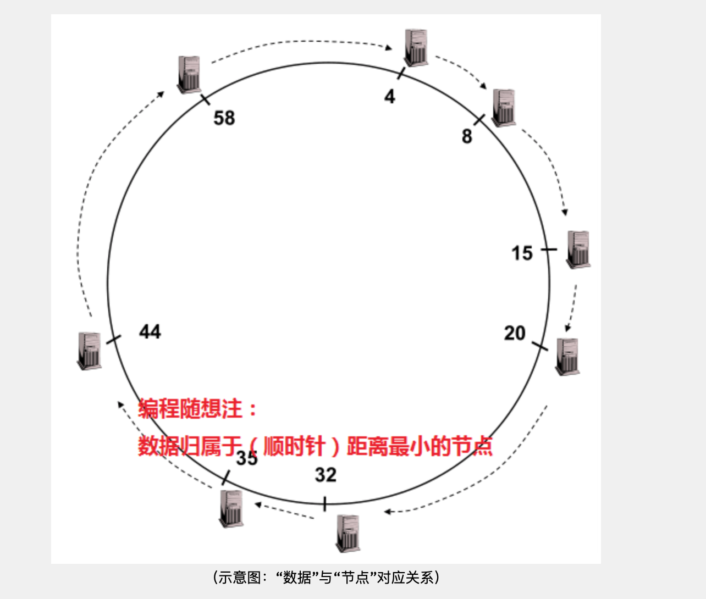

预备知识
什么是“散列表/哈希表（hash table）”？
散列表/哈希表是用来存储“键值对”的一种容器。即key/value pairs，简称“K/V”。有了“散列表”，你可以很方便快速地通过 key 来获得 value。
如何实现散列表？
在散列表这种数据结构中，会包含 N 个 bucket（桶）。对于某个具体的散列表，N（桶的数量）通常是【固定不变】的。于是可以对每个桶进行编号，从 0 到 N-1。“桶”是用来存储“键值对”的，你可以把它通俗理解成一个动态数组，里面可以存放【多个】“键值对”。
下面展示了散列表的【查找】原理。当使用某个 key 进行查找，会先用某个散列函数计算这个key 的散列值。得到散列值通常是一个整数，然后用散列值对N（桶数）进行“取模”运算（除法求余数），就可以算出对应的桶编号。（注：取模运算是最常用的做法，但不是唯一的做法）

什么是“散列表”的【碰撞/冲突】（Collision）？
当两个不同的 key 进行哈希计算却得到【相同的散列值】，就是所谓的【散列函数碰撞】。一旦出现这种情况，这两个 key 对应的两个键值对就会被存储在【同一个】桶（bucket）里面。另一种情况是：虽然计算出来的散列值【不同】，但经过“取模运算”之后却得到【相同】的桶编号。这时候也会出现：两个键值对存储在一个桶里面。
如果某个哈希表在存储数据时【完全没有碰撞】，那么每个桶里面都只有 0个 或 1个 键值对。查找起来就非常快。反之，如果某个哈希表在存储数据时出现【严重碰撞】，就会导致某些桶里面存储了一大堆的键值对。将来查找 key 的时候，如果定位到的是这种“大桶”，就需要在这个桶里面逐一比对 key 是否相同——查找效率就会变得很差。

分布式散列表（DHT）概述
分布式散列表也称为“分布式哈希表”，英文是“distributed hash table”，简称 DHT。
“分布式散列表”在概念上类似与传统的“散列表”，差异在于——“传统的散列表”主要是用于单机上的某个软件中；“分布式散列表”主要是用于分布式系统（此时，分布式系统的节点可以通俗理解为散列表中的 bucket）。“分布式散列表”主要是用来存储大量的（甚至是海量的）数据。在实际使用场景中，直接对所存储的“每一个业务数据”计算散列值，然后用散列值作为 key，业务数据本身是 value。 
为什么会出现 DHT？
在 P2P 文件共享的发展史上，出现过3种不同的技术路线（三代）。
- 第1代采用【中央服务器】的模式——每个节点都需要先连接到中央服务器，然后才能查找到自己想要的文件在哪里。这种技术的最大缺点是——中央服务器成为整个 P2P 网络的【单点故障】。这类 p2p 的典型代表是 Napster。
- 第2代采用【广播】的模式——要找文件的时候，每个节点都向自己相连的【所有节点】进行询问；被询问的节点如果不知道这个文件在哪里，就再次进行“广播”......如此往复，直至找到所需文件。这种技术的最大缺点是——会引发“广播风暴”并严重占用网络带宽，也会严重消耗节点的系统资源。即使在协议层面通过设置 TTL（time to live），限制查询过程只递归 N 轮，依然【无法】彻底解决此弊端。这类 p2p 的典型代表是 Gnutella 的早期版本。
- 第3代采用的技术就是DHT。通过DHT, 不但避免了第一代技术的【单点故障】，也避免了第二代技术的【广播风暴】。
分布式散列表（DHT）的难点
“无中心”导致的难点
前面提到了 DHT 的诞生，是为了解决前面两代P2P技术的缺陷。其中一个缺陷是“中央服务器”导致的【单点故障】。因此 DHT 就【不能】再依靠中央服务器。而没有了中央服务器，就需要提供一系列机制来实现节点之间的通讯。
“海量数据”导致的难点
DHT 的很多使用场景是为了承载海量数据（PB或更高级别）。由于数据是海量的，每个节点只能存储（整个系统的）一小部分数据。需要把数据【均匀分摊】到每个节点。
“节点动态变化”导致的难点
很多 DHT 的使用场景是在公网（互联网）上，参与 DHT 的节点（主机）会出现【频繁变化】——每时每刻都有新的节点上线，也会有旧的节点下线。在这种情况下，需要确保数据依然是【均匀分摊】到所有节点。
（特别强调一下：传统的散列表在这种情况下的困难）前面提到：传统散列表所含的【桶数】是固定不变滴。因为传统散列表在针对 key 计算出散列值之后，需要用“散列值”和“桶数”进行某种运算（比如：取模运算），从而得到桶的编号。如果桶的数量出现变化，就会影响到上述“取模运算”的结果，然后导致数据错乱。
“高效查询”导致的难点
对于节点数很多的分布式系统，如何快速定位节点，同时又不消耗太多网络资源，这也是一个挑战。比如前面提到第二代 P2P 技术，在查找所需文件时会导致【广播风暴】。这就成为其致命弱点。DHT必须有更高效的查找机制。而且这种查找机制要能适应“节点动态变化”这个特点。
分布式散列表（DHT）如何解决上述难点？
DHT 采用如下一些机制来解决上述问题，并满足分布式系统比较苛刻的需求。
“散列算法”的选择
前面提到：DHT 通常是直接拿业务数据的散列值作为 key，业务数据本身作为 value。考虑到 DHT需要承载的数据量通常比较大，散列函数产生的“散列值范围”（keyspace）要足够大，以防止太多的碰撞。更进一步，如果keyspace【大到一定程度】，使得“随机碰撞”的概率小到忽略不计，就有助于简化 DHT 的系统设计。通常的 DHT 都会采用大于等于 128 比特的散列值（2128 比 “地球上所有电子文档总数” 还要大【很多数量级】）。
同构的“node ID”与“data key”
DHT 属于分布式系统的一种。既然是分布式系统，意味着存在【多个】节点（电脑主机）。在设计分布式系统的时候，一种常见的做法是：给每一个节点（node）分配【唯一的】ID。有了这个节点ID（nodeID），在系统设计上的好处是——对分布式系统所依赖的物理网络的【解耦】。很多 DHT 的设计会让“nodeID”采用跟“datakey”【同构】的散列值。这么搞的好处是：
- 当散列值空间足够大的时候，随机碰撞忽略不计，因此也就确保了 node ID 的唯一性
- 可以简化系统设计——比如简化路由算法（下面会提及）
“拓扑结构”的设计
作为分布式系统，DHT 必然要定义某种拓扑结构；有了拓扑结构，自然就要设计某种“路由算法”。如果某个 DHT 采用前面所说的——“node ID”与“data key”【同构】——那么很自然的就会引入“Key-based routing”。请注意，这【不是】某个具体的路由算法，而只是某种【风格】。采用这种风格来设计路由机制，好处是：key 本身已经提供了足够多的路由信息。当某个分布式系统具有自己的拓扑结构，它本身成为一个“覆盖网络”（洋文叫“Overlay Network”）。所谓的“覆盖网络”，通俗地说就是“网络之上的网络”。对于大部分 DHT而言，它们是基于互联网之上的“覆盖网络”，它们的数据通讯是依赖下层的互联网来实现的。前面提到的“nodeID”，其【解耦】的作用就体现在——分布式系统在设计拓扑结构和路由算法时，只需要考虑 node ID，而不用考虑其下层网络的属性（比如：协议类型、IP 地址、端口号）。
“路由算法”的权衡
由于 DHT 中的节点数可能非常多（比如：几十万、几百万），而且这些节点是动态变化的。因此就【不可能】让每一个节点都记录所有其它节点的信息。实际情况是：每个节点通常只知道少数一些节点的信息。这时候就需要设计某种路由算法，尽可能利用已知的节点来转发数据。“路由算法”这玩意儿很重要，直接决定了DHT的速度和资源消耗。在确定了路由算法之后，还需要做一个两难的权衡——“路由表的大小”。路由表越大，可以实现越短（跳数越少）的路由；缺点是：（由于节点动态变化）路由表的维护成本也就越高。路由表数越小，其维护成本越小；缺点是：路由就会变长（跳数变多）。
距离算法
某些 DHT 系统还会定义一种“距离算法”，用来计算：“节点之间的距离”、“数据之间的距离”、“节点与数据的距离”。请注意：此处所说的“距离”属于【逻辑层面】，对应的是 DHT 自己的拓扑结构；它与地理位置【无关】，也与互联网的拓扑结构【无关】。写到这里，某些聪明的读者就会明白：为啥前面要强调——“node ID”与“data key”【同构】。当这两者【同构】，就可以使用【同一种“距离算法”】；反之，如果这两者不同构，多半要引入几种不同的“距离算法”。
数据定位
DHT 与传统的散列表在【功能】上是类似的。说白了，他们最关键的功能只有两个——“保存数据”和“获取数据”。如果用 C 语言来表示的话，函数原型大致如下： 1
2void put(KEY k, VALUE v); // 保存“键值对”
VALUE get(KEY k); // 根据“键”获取“值”
保存数据
当某个节点得到了新加入的数据（K/V），它会先计算自己与新数据的key 之间的“距离”；然后再计算它所知道的其它节点与这个 key 的距离。如果计算下来，自己与key的距离最小，那么这个数据就保持在自己这里。否则的话，把这个数据转发给距离最小的节点。收到数据的另一个节点，也采用上述过程进行处理（递归处理）。
获取数据
当某个节点接收到查询数据的请求（key），它会先计算自己与 key 之间的“距离”；然后再计算它所知道的其它节点与这个key的距离。如果计算下来，自己与key的距离最小，那么就在自己这里找有没有 key 对应的 value。有的话就返回 value，没有的话就报错。否则的话，把这个数据转发给距离最小的节点。收到数据的另一个节点，也采用上述过程进行处理（递归处理）。
Chord 协议简介
拓扑结构——环形
要聊Chord的拓扑，必然要提到“ConsistentHashing”（译作：“一致散列”或“稳定散列”）。搞明白“一致散列”也就知道 Chord 的拓扑设计了。提出“一致散列”这个概念主要是为了解决“节点动态变化”的难点（前面有提及）。为了解决这个难点，“一致散列”把散列值空间（keyspace）构成一个【环】。对于 m 比特的散列值，其范围是[0,2m-1]。你把这个区间头尾相接就变成一个环，其周长是 2m。然后对这个环规定了一个移动方向（比如顺时针）。如果 node ID 和 data key 是同构的，那么这两者都可以映射到这个环上（对应于环上的某点）。
假设有某个“节点A”，距离它最近的是“节点B”（以顺时针方向衡量距离）。那么称B是A的【继任】（successor），A 是 B的【前任】（predecessor）。数据隶属于【距离最小】的节点。以 m = 6 的环形空间为例：
- 数据区间 [5,8] 隶属于“节点8”
- 数据区间 [9,15] 隶属于“节点15”
- ......
- 数据区间 [59,4] 隶属于“节点4”（注：“6比特”的环形空间，63之后是0）

路由机制
基本路由（简单遍历）
当收到请求（key），先看 key 是否在自己这里。如果在自己这里，就直接返回信息；否则就把 key 转发给自己的继任者。以此类推。这种玩法的时间复杂度是：O(N)。对于一个节点数很多的 DHT 网络，这种做法显然【非常低效】。
高级路由（Finger Table）
由于“基本路由”非常低效，自然就引入更高级的玩法——基于“Finger Table”的路由。“Finger Table”是一个列表，最多包含 m 项（m 就是散列值的比特数），每一项都是节点 ID。假设当前节点的 ID 是 n，那么表中第 i 项的值是：successor( (n + 2i) mod 2m ) 当收到请求（key），就到“Finger Table”中找到【最大的且不超过 key】的那一项，然后把 key 转发给这一项对应的节点。有了“Finger Table”之后，时间复杂度可以优化为：O(log N)。
节点的加入
- 任何一个新来的节点（假设叫 A），需要先跟 DHT 中已有的任一节点（假设叫 B）建立连接。
- A随机生成一个散列值作为自己的 ID（对于足够大的散列值空间，ID 相同的概率忽略不计）
- A通过跟 B 进行查询，找到自己这个 ID 在环上的接头人。也就是——找到自己这个 ID 对应的“继任”（假设叫 C）与“前任”（假设叫 D）
- 接下来，A 需要跟 C 和 D 进行一系列互动，使得自己成为 C 的前任，以及 D 的继任。
这个互动过程，大致类似于在双向链表当中插入元素
节点的【正常】退出
如果某个节点想要主动离开这个DHT网络，按照约定需要作一些善后的处理工作。比如说，通知自己的前任去更新其继任者......这些善后处理，大致类似于：在双向链表中删除元素。
节点的【异常】退出
作为一个分布式系统，任何节点都有可能意外下线（也就是说，来不及进行善后就挂掉了）假设节点A的继任者【异常】下线了，那么 节点A就抓瞎了。为了保险起见，Chord引入了一个“继任者候选列表”的概念。每个节点都用这个列表来包含：距离自己最近的 N 个节点的信息，顺序是【由近到远】。一旦自己的继任者下线了，就在列表中找到一个【距离最近且在线】的节点，作为新的继任者。然后节点A 更新该列表，确保依然有N个候选。更新完“继任者候选列表”后，节点A也会通知自己的前任，那么A的前任也就能更新自己的“继任者候选列表”。
reference from https://program-think.blogspot.com/2017/09/Introduction-DHT-Kademlia-Chord.html#head-6